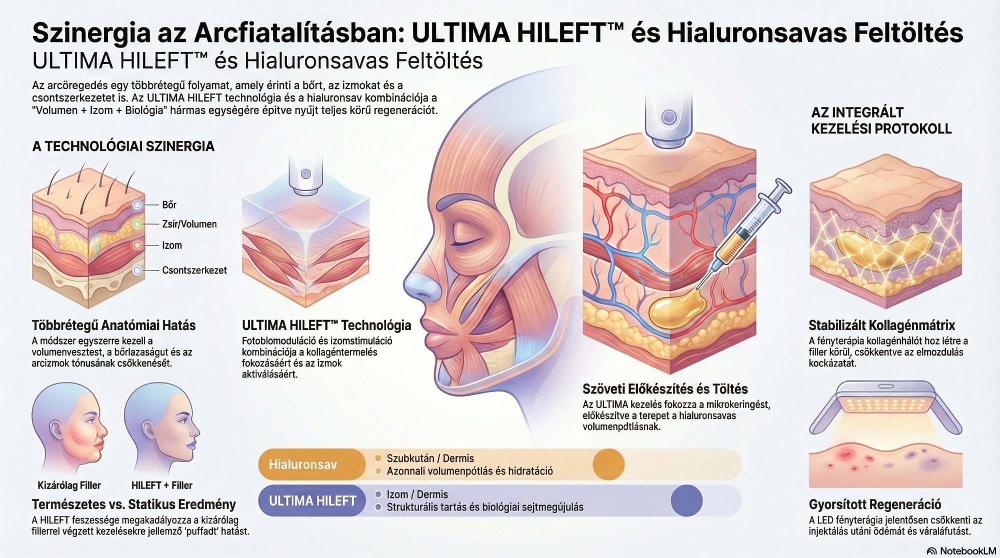
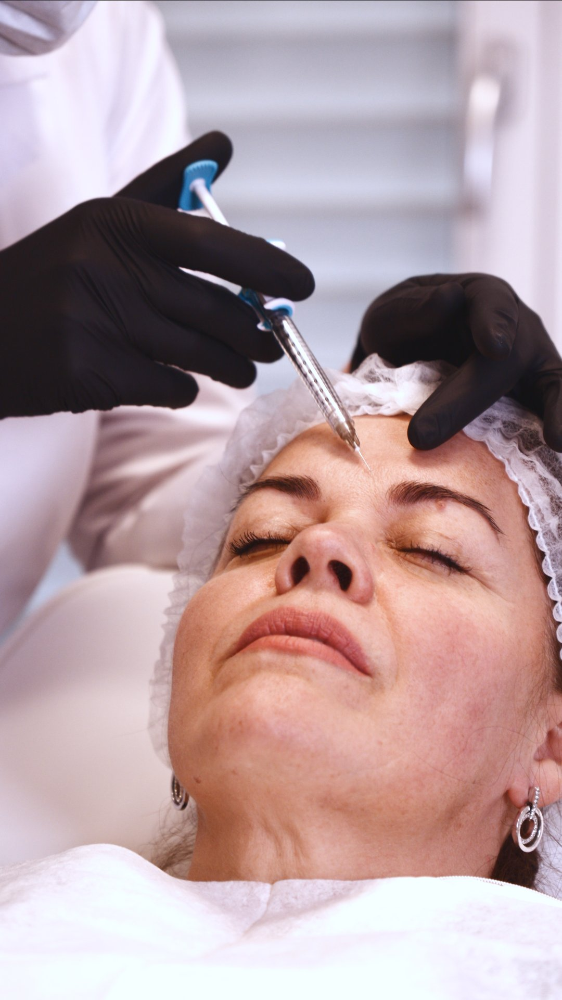
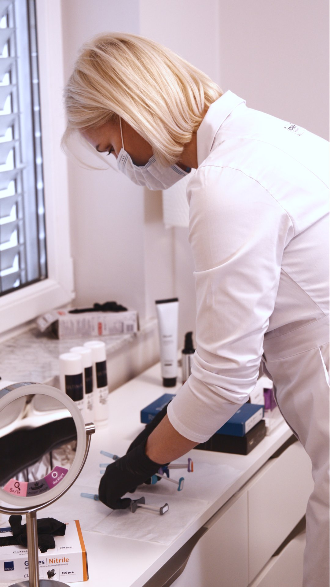

Új generációs arcfiatalítás
Arcának fiatalos struktúráját építjük vissza, túlzások és szikék nélkül.
Fedezze fel az esztétikai medicina új korszakát! Az ULTIMA HILEFT™ technológia és a hialuronsavas feltöltések szinergiája sejtszinten újítja meg bőrét, miközben visszaadja az arc eredeti, harmonikus vonásait.
A kombinált protokoll a Volumen + Izom + Biológia hármas egységére épül:
Az elveszett térfogat természetes pótlása.
Az arc tartószerkezetének megerősítése.
Sejtszintű kollagén-stimuláció és regeneráció.
A speciális vörös és infravörös fény mélyre hatol, ahol a sejtjeid „napelemként” nyelik el az energiát. Ez turbó fokozatra kapcsolja a sejtek anyagcseréjét, beindítja a kollagéntermelést és felgyorsítja a szövetek gyógyulását.
A kombinált protokoll a Volume + Izom + Biológia hármas egységére épül. A hialuronsav segít visszaállítani az elveszett strukturális volumeneket és az arc kontúrjait, míg az ULTIMA HILEFT technológia aktiválja a mikrokeringést,támogatja az izomtónust és stimulálja a fibroblasztokat a kollagéntermelés fokozására.
Ez a szinergia nem csupán feltölti a hiányzó volumeneket, hanem biológiailag aktív környezetet hoz létre a szövetekben, amely hosszabb távon stabilabb és természetesebb eredményeket tesz lehetővé. Az integrált megközelítéscélja nem az arc megváltoztatása, hanem a természetes, fiatal struktúra visszaállítása.
A cél nem az arc megváltoztatása, hanem a természetes, fiatal struktúra visszaépítése — harmonikus, elegáns és természetes eredménnyel.
A probléma megértése
Nem elegendő egyetlen struktúrát kezelni. Az öregedés minden anatómiai réteget érint.
Ezért a modern megoldás nem egyetlen problémát kezel, hanem integrált protokollt alkalmaz, amely egyszerre hat több szinten.
Ismerd meg a technológiátA megoldás
Új generációs, nem invazív esztétikai technológia, amely két kulcsfontosságú biológiai mechanizmust kombinál.
Fényből energia: A speciális vörös fény mélyre hatol, ahol a sejtjeid „napelemként” nyelik el azt.
Sejtszintű ébredés: A fény hatására a sejtek energiatermelése felpörög. Olyan ez, mint egy ébresztő az ellustult sejteknek: hirtelen több erejük lesz a regenerációhoz.
EredményF, a fiatalosabb bőr: Beindul a természetes kollagéntermelés, a bőr mélyebben hidratálttá válik, a gyulladások és apró sérülések pedig látványosan gyorsabban gyógyulnak.
Mechanotranszdukció: Az izomösszehúzódás mechanikai jeleket küld a fibroblasztoknak, közvetlenül stimulálva a kollagéntermelést.
Keringés javítása: Fokozott vér- és nyirokkeringés.
Emelő hatás: Javuló izomtónus, csökkenő megereszkedés, feszesebb bőrminőség.
Az ULTIMA rendszer egyedülálló módon egyszerre hat az izmokra és a bőrre, ami jelentős előnyt jelent a legtöbb esztétikai technológiával szemben.
tobbet szeretnek megtudniMiért működik jobban együtt?
Különböző anatómiai rétegeket céloznak, így együtt komplexebb, többdimenziós hatást hoznak létre.

Hagyományos megközelítés
Kockázat: "Puffadt" arc (overfilled syndrome), mivel a volumen nem kezeli az izomtónus hiányát.
Modern integrált megközelítés
Eredmény: Aktiválja az arcizmokat, növeli az izomtömeget, feszesíti a szöveteket.
A fotobiomoduláció serkenti a fibroblasztokat új kollagénrostok termelésére. Egy biológiai kollagénmátrix jön létre a filler körül, stabilizálva azt és csökkentve a migráció kockázatát.
A LED fényterápia azonnali biológiai választ indít: gyulladáscsökkentés, mikrokeringés javítása, sebgyógyulás felgyorsítása. Jelentősen csökken az ödéma és véraláfutás (downtime).
A HILEFT feszessége megakadályozza a kizárólag fillerrel végzett kezelésekre jellemző "puffadt" hatást. Fókuszterületek: állvonal, középarc, mandibula régió.
Kinek ajánljuk?
A kombinált protokoll különösen hatékony az alábbi esetekben.
Volumenvesztett arc
Az életkorral az arc mélyebb zsírszövete csökken. A strukturális kezelés visszaállíthatja a természetes volumeneloszlást.
Bőrlazaság és megereszkedés
A kollagén- és elasztintermelés csökkenése miatt az arc elveszíti feszességét. A kombinált kezelés a bőrt és a mélyebb struktúrákat is támogatja.
„Fáradt" arckifejezés
A középarc volumenvesztése és a szem alatti terület változásai miatt az arc fáradtabbnak tűnhet. A kezelés segíthet a frissebb, kipihentebb megjelenés visszaállításában.
Ozempic-face
Gyors fogyás után gyakran jelentős volumenvesztés alakul ki az arcon, ami megereszkedett megjelenést okozhat. A strukturális hialuronsavas feltöltés segíthet az arc arányainak visszaállításában.
Férfi állvonal formázás
Az állív és mandibula régió hangsúlyosabbá tétele javíthatja az arc karakterét és arányait.
Periorbitális rejuvenáció
A szem körüli terület érzékeny bőrének regenerációja javíthatja a bőr textúráját, csökkentheti a finom vonalakat és visszaadhatja a tekintet frissességét.
Nem biztos benne, hogy ez a kezelés önnek való?
Időpontfoglalás konzultációraA kezelés menete
Cél: Mikrokeringés fokozása, fibroblaszt aktiválás, szöveti előkészítés.
A bőr „fogékonyabbá" válik a filler befogadására.
Célterületek: Járomív, nasolabialis redő, állvonal, ajak, tear trough.
Modern töltőanyagok: Juvederm, Restylane, Belotero.
Cél: Gyulladáscsökkentés, kollagén stimuláció, filler stabilizáció.
Azonnali nyugtató hatás, minimális downtime.

Precíziós injektálás
Szakértői felkészülésA kezelés nem változtatja meg az arc karakterét – csak visszaállítja annak természetes harmóniáját.
A kombinált kezelések után a bőr regenerációja otthoni fotobiomodulációval tovább támogatható. Az ULTIMA Beauty Mask segíti a gyulladáscsökkentést, a kollagéntermelést és az eredmények fenntartását.
A klinika
Látogasson el budai klinikánkra, ahol a legmodernebb technológiával és személyre szabott megközelítéssel várjuk.
Fontos tudni
Az ULTIMA kezelés biztonságos, nem invazív eljárás. A kezelési tervet mindig orvosi konzultáció alapján kell kialakítani.
A kezelés minden esetben szakértői orvosi konzultáció után történik.
Következő lépés
Kérjen időpontot, és tapasztalja meg a kombinált regenerációs koncepciót.